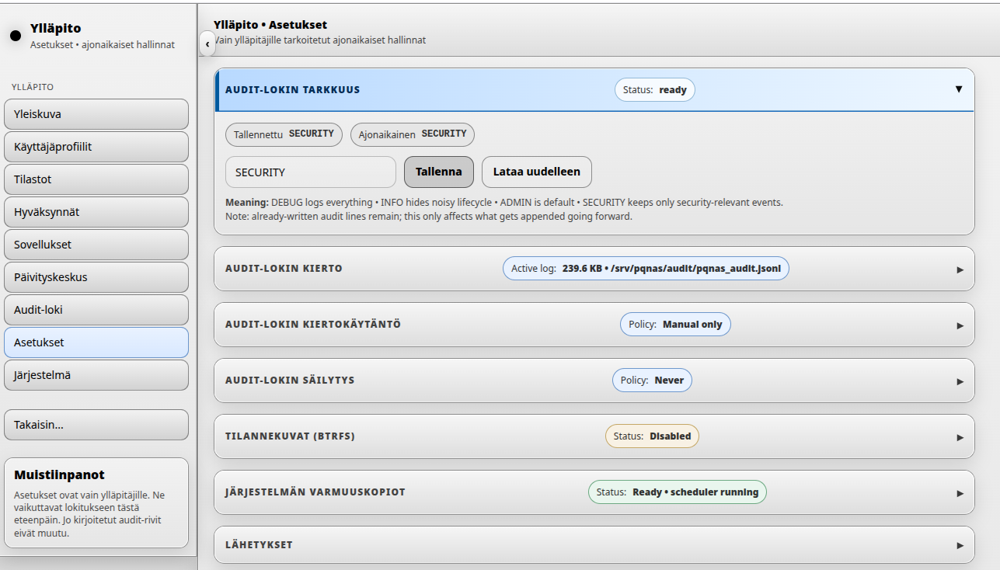
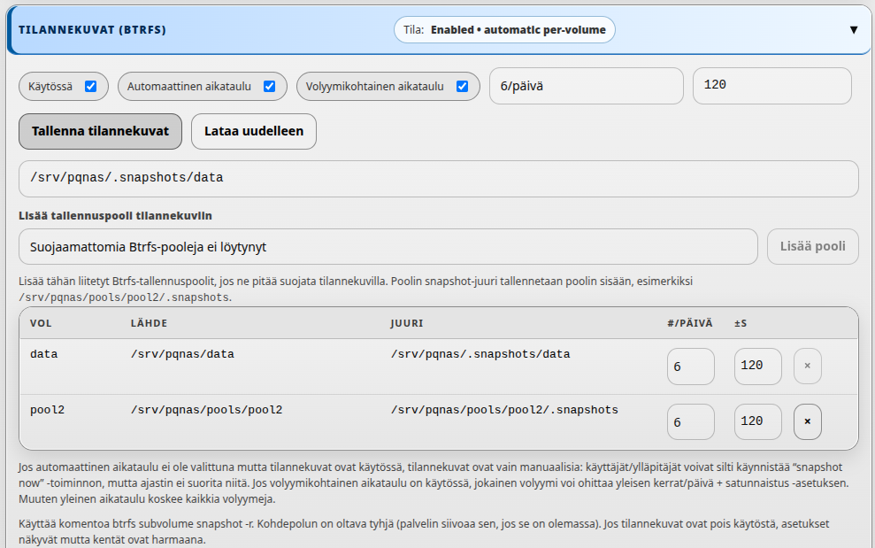
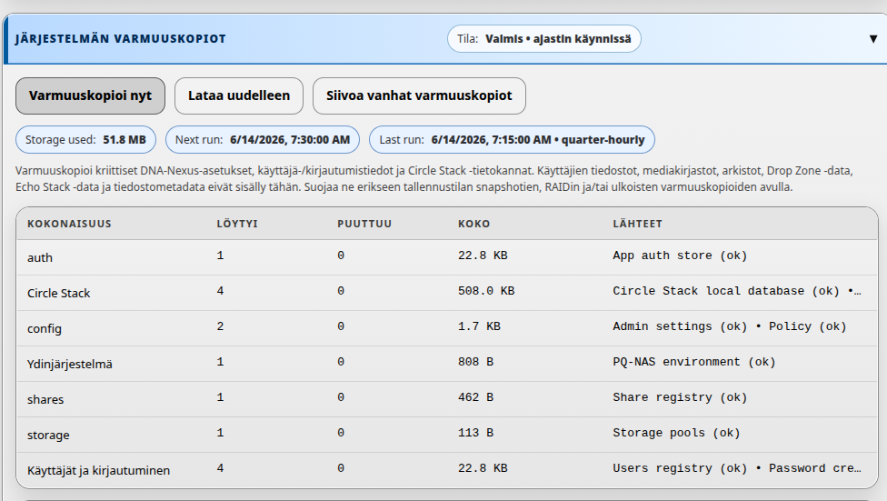
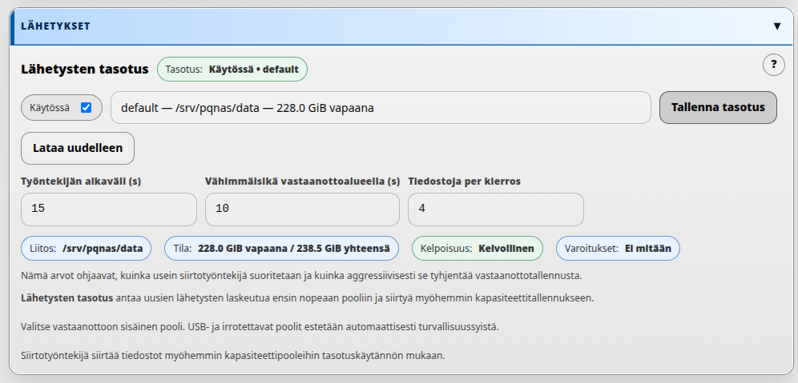
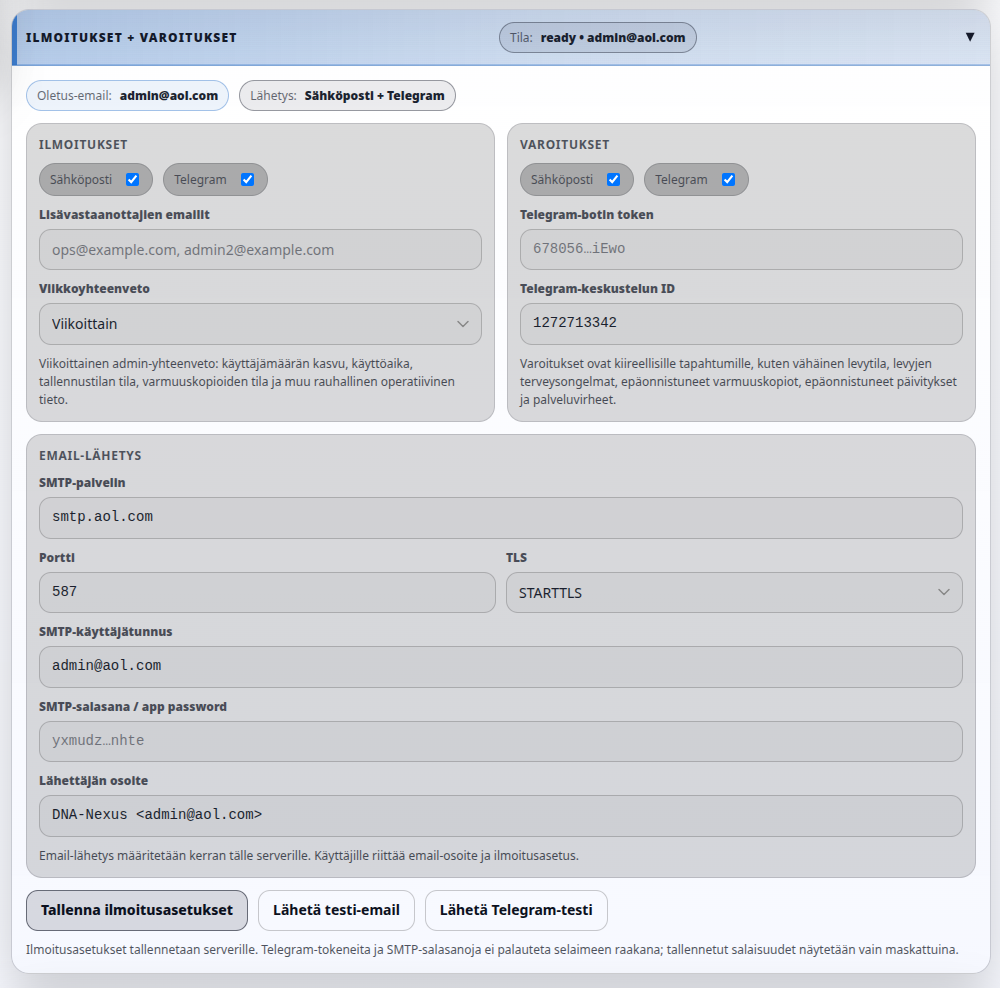
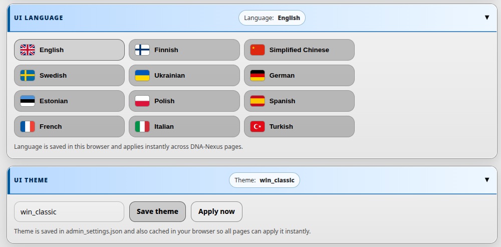

Palvelimen asetukset
Palvelimen asetukset ohjaavat DNA-Nexus-asennuksen perustoimintaa. Ensimmäisen ylläpitäjän kirjautumisen jälkeen nämä asetukset kannattaa tarkistaa ennen tavallisten käyttäjien luomista tai tuotantodatan tallentamista.
Ensimmäiset ylläpitäjän asetukset
Kun ensimmäinen ylläpitäjä kirjautuu DNA-Nexukseen ensimmäistä kertaa, työtila voi olla vielä tyhjä. Tämä on uudessa asennuksessa normaalia. Ennen käyttäjien luomista tai sisällön lataamista avaa vasemman reunan Admin-alue ja tarkista palvelimen perusasetukset.

Audit-lokin tarkkuus
Ensimmäinen ylläpitäjän tarkistettava asetus on audit-lokin tarkkuus. Tämä määrittää, kuinka yksityiskohtaisesti audit-loki tallentaa järjestelmän tapahtumia.
Audit-lokia käytetään myöhemmin tärkeiden järjestelmätapahtumien tarkasteluun. Tällaisia tapahtumia ovat esimerkiksi kirjautumiset, ylläpitotoimet, käyttäjähallinnan muutokset ja turvallisuuden kannalta merkittävät palvelintapahtumat. Tarkempi lokitus voi auttaa testauksessa ja vianetsinnässä, mutta normaalikäytössä se voi tuottaa turhan paljon kohinaa.
Audit-lokin kierto ja säilytys
Audit-lokin kierto määrittää, milloin aktiivinen audit-loki arkistoidaan kierrätetyksi lokitiedostoksi. Audit-lokin säilytys määrittää, kuinka pitkään kierrätettyjä audit-lokeja säilytetään.
Kiertokäytäntö
DNA-Nexus tukee useita audit-lokin kiertokäytäntöjä. Valitse käytäntö sen mukaan, kuinka paljon audit-tapahtumia palvelimella oletetaan syntyvän.
| Kiertokäytäntö | Merkitys | Tyypillinen käyttö |
|---|---|---|
| Manuaalinen | Ylläpitäjä kierrättää audit-lokin käsin audit-lokin kierto -osiosta. | Pienet testiympäristöt tai asennukset, joissa ylläpitäjä haluaa täyden manuaalisen hallinnan. |
| Päivittäin (UTC) | Aktiivinen audit-loki kierrätetään kerran päivässä UTC-ajan mukaan. | Normaalit asennukset, joissa päivittäisiä audit-arkistoja on helppo tarkastella. |
| Kun aktiivinen loki ylittää N Mt | Aktiivinen audit-loki kierrätetään, kun se kasvaa määritettyä kokoa suuremmaksi. | Vilkas palvelin, jossa lokin koko on tärkeämpi kuin kalenteripäivä. |
| Koko tai päivä, kumpi tulee ensin | Audit-loki kierrätetään, kun joko kokoraja täyttyy tai päivittäinen UTC-kierto käynnistyy. | Tuotantoympäristöt, joissa sekä ennustettava päivärytmi että kokoraja ovat hyödyllisiä. |
Säilytyskäytäntö
Audit-lokin säilytys määrittää, mitkä kierrätetyt audit-lokiarkistot säilytetään. Tämä estää vanhoja audit-arkistoja käyttämästä rajattomasti levytilaa.
| Säilytyskäytäntö | Merkitys | Esimerkki |
|---|---|---|
| Älä poista automaattisesti | DNA-Nexus säilyttää kierrätetyt audit-lokit, kunnes ylläpitäjä poistaa ne käsin. | Hyödyllinen, jos erillinen varmuuskopiointi- tai compliance-prosessi hallitsee lokien säilytystä. |
| Säilytä viimeiset N päivää | Määritettyä päivämäärää vanhemmat kierrätetyt audit-lokit voidaan siivota. | Säilytä viimeiset 90 päivää. |
| Säilytä viimeiset N kierrätettyä tiedostoa | Vain uusin määritetty määrä kierrätettyjä audit-lokitiedostoja säilytetään. | Säilytä viimeiset 30 kierrätettyä tiedostoa. |
| Säilytä enintään N Mt yhteensä | Kierrätettyjä audit-arkistoja poistetaan, kunnes kokonaiskoko jää määritetyn rajan alle. | Säilytä enintään 1024 Mt kierrätettyjä audit-lokeja. |
Siivouksen esikatselu ja suoritus
Käytä Esikatsele siivous -toimintoa ennen kierrätettyjen audit-lokien poistamista. Esikatselu on kuivaharjoitus: se näyttää poistettavat tiedostot ja arvioi, kuinka paljon levytilaa vapautuisi.
Käytä Suorita siivous nyt vasta esikatselun tarkistamisen jälkeen. Tämä tekee varsinaisen siivouksen valitun säilytyskäytännön mukaan.
Tilannekuvat (Btrfs)
Jos DNA-Nexuksen datatallennus käyttää Btrfs-tiedostojärjestelmää, palvelin voi luoda automaattisia tilannekuvia. Tilannekuvat ovat tietystä ajanhetkestä otettuja näkymiä dataan, ja niitä voidaan myöhemmin käyttää palautukseen Snapshot Manager -sovelluksessa.

Tilannekuva-asetukset
Ylläpitäjä voi ottaa tilannekuvat käyttöön tai poistaa ne käytöstä, valita luodaanko tilannekuvia automaattisesti ja määrittää kuinka usein niitä otetaan.
| Asetus | Merkitys | Tyypillinen käyttö |
|---|---|---|
| Käytössä | Ottaa tilannekuvatuen käyttöön tai poistaa sen käytöstä määritetyssä Btrfs-tilannekuvapolussa. | Ota käyttöön, kun palvelimen tulee säilyttää palautettavia ajanhetkikopioita. |
| Automaattinen ajastus | Sallii DNA-Nexuksen luoda tilannekuvia automaattisesti aikataulun mukaan. | Käytä normaalissa asennuksessa, jossa tilannekuvien halutaan syntyvän ilman käsityötä. |
| Taltiokohtainen ajastus | Sallii jokaisen taltion ohittaa globaalin tilannekuva-aikataulun. | Käytä, jos jotkut taltiot tarvitsevat tilannekuvia useammin tai harvemmin kuin muut. |
| Kertaa päivässä | Määrittää, kuinka monta automaattista tilannekuvaa otetaan päivässä. | Esimerkiksi 1 tilannekuva päivässä vähäisen käytön järjestelmässä. |
| Jitter (s) | Lisää pienen satunnaisen viiveen sekunteina ennen ajastettujen tilannekuvatöiden käynnistymistä. | Käytä jitteriä, jotta kaikki tilannekuvatyöt eivät käynnisty täsmälleen samalla sekunnilla. |
Manuaaliset tilannekuvat
Jos automaattinen ajastus poistetaan käytöstä mutta tilannekuvat ovat edelleen käytössä, tilannekuvat ovat vain manuaalisia. Tällöin käyttäjät tai ylläpitäjät voivat edelleen käynnistää tilannekuvan luonnin, mutta ajastin ei tee sitä automaattisesti.
Snapshot Manager -sovellus
Asetussivu määrittää, ovatko tilannekuvat käytössä ja miten automaattinen ajastus toimii. Varsinainen tilannekuvien hallinta tehdään erillisessä Snapshot Manager -sovelluksessa. Snapshot Managerissa ylläpitäjät voivat tarkastella tilannekuvia ja tehdä esimerkiksi palautuksia.
Järjestelmän varmuuskopiot
Järjestelmän varmuuskopiot suojaavat DNA-Nexuksen kriittisiä palvelinasetuksia ja sisäistä järjestelmätilaa. Ne ovat pieniä varmuuskopioita, jotka järjestelmän backup worker luo.

Mitä sisältyy
Järjestelmän varmuuskopiot sisältävät tärkeitä palvelinpuolen asetuksia ja sisäistä tilaa, kuten DNA-Nexuksen ympäristötiedoston, ylläpitoasetukset, policy-asetukset, käyttäjä- ja kirjautumisdataa, app auth -dataa, jakorekisterin, tallennuspoolien asetukset ja Circle Stack -tietokantoja.
Arkaluonteiset ympäristöarvot redaktoidaan ennen kuin ympäristötiedosto kopioidaan varmuuskopioarkistoon.
Mihin järjestelmävarmuuskopiot tallennetaan
Järjestelmän varmuuskopiot tallennetaan palvelimella polun /srv/pqnas/backups/system alle. Jokaisella varmuuskopiotasolla on oma alihakemistonsa, kuten quarter-hourly, hourly, daily, weekly ja manual.
Yksittäinen varmuuskopio on hakemisto, esimerkiksi /srv/pqnas/backups/system/manual/YYYYMMDD-HHMMSS-admin-ui. Hakemiston sisällä varmuuskopioidut tiedostot ovat varmuuskopion suhteellisissa poluissa, kuten core/etc/pqnas/pqnas.env, config/admin_settings.json, users/users.json ja notifications/notifications.json.
Ylläpitäjä voi kopioida varmuuskopiohakemistoja erilliselle medialle, esimerkiksi ulkoiselle USB-tikulle, lisävarmuuskopioksi. Kun USB-media on liitetty, manuaaliset järjestelmävarmuuskopiot voi kopioida esimerkiksi näin:
sudo rsync -aH --numeric-ids /srv/pqnas/backups/system/manual/ /media/admin/USB/pqnas-system-backups/manual/Varmuuskopiotasot
Ajastin luo useita varmuuskopiotasoja. Varmuuskopiolistasta näkee, mihin tasoon kukin varmuuskopio kuuluu.
| Taso | Milloin se ajetaan | Oletussäilytys |
|---|---|---|
| quarter-hourly | 15 minuutin välein | 24 tuntia |
| hourly | Tasatunnein | 7 päivää |
| daily | Klo 03:00 | 30 päivää |
| weekly | Sunnuntaisin klo 03:00 | 12 viikkoa |
| manual | Kun ylläpitäjä painaa Tee varmuuskopio nyt | Säilytetään, kunnes ylläpitäjä poistaa sen |
Hallintapainikkeet
Tee varmuuskopio nyt luo manuaalisen järjestelmävarmuuskopion heti. Lataa uudelleen päivittää varmuuskopion tilan ja listan. Siivoa vanhat varmuuskopiot poistaa ajastettuja varmuuskopioita, jotka ovat säilytyskäytäntöä vanhempia. Manuaalisia varmuuskopioita ei poisteta automaattisella säilytyksellä.
Tilatiedot
- Käytetty tila näyttää, kuinka paljon levytilaa järjestelmän varmuuskopiot käyttävät.
- Seuraava ajo näyttää, milloin ajastin ajaa seuraavan kerran.
- Viimeisin ajo näyttää viimeisimmän ajastimen tuloksen tai virheen.
- Ryhmä näyttää jokaisen suojatun varmuuskopioryhmän.
- Löytyi ja Puuttuu näyttävät, löytyivätkö odotetut lähteet.
- Lähteet listaa kuhunkin ryhmään kuuluvat tiedostot tai tietokannat.
Lähetykset
Jos palvelimessa on nopea SSD tai muu nopea sisäinen tallennuspooli, sitä voidaan käyttää lähetysten vastaanottotallennuksena. Tässä mallissa uudet lähetykset laskeutuvat ensin nopeaan pooliin, ja palvelin siirtää ne myöhemmin lopullisiin tallennuspaikkoihin lähetysten tasotuskäytännön mukaan.

Miten lähetysten tasotus toimii
Kun lähetysten tasotus on käytössä, valittu vastaanottopooli ottaa uudet ladatut tiedostot ensin vastaan. Taustalla toimiva siirtotyöntekijä siirtää tiedostot myöhemmin vastaanottotallennuksesta kapasiteettitallennukseen määritetyn käytännön mukaan.
Vastaanottotallennuksena tulee käyttää vain sisäisiä pooleja. USB- ja irrotettavat poolit estetään automaattisesti turvallisuussyistä.
Työntekijäarvojen valinta
Työntekijäasetukset määrittävät, kuinka usein siirtotyöntekijä suoritetaan ja kuinka aggressiivisesti se tyhjentää vastaanottotallennusta. Pienemmät arvot tekevät siirrosta reagoivamman, suuremmat arvot vähentävät taustatoimintaa.
Pienelle tai keskikokoiselle asennukselle esimerkkiarvot voivat olla työntekijän aikaväli
60 sekuntia, vastaanottotallennuksen vähimmäisikä 60 sekuntia
ja enintään 8 tiedostoa kierroksella. Vilkkaammat palvelimet voivat tarvita
eri arvoja levyn nopeuden, lähetysmäärän ja kapasiteettitallennuksen rakenteen mukaan.
Lähetysten tasotusasetukset
| Asetus | Merkitys | Tyypillinen käyttö |
|---|---|---|
| Käytössä | Ottaa lähetysten tasotuksen käyttöön tai poistaa sen käytöstä. | Ota käyttöön, jos palvelimella on nopea vastaanottopooli. |
| Vastaanottopooli | Sisäinen tallennuspooli, johon uudet lähetykset saapuvat ensin. | Valitse nopea SSD-pohjainen pooli, jos mahdollista. |
| Työntekijän aikaväli (s) | Kuinka usein siirtotyöntekijä herää ja tarkistaa siirrettävät tiedostot. | Käytä lyhyttä aikaväliä, jos haluat siirtojen reagoivan nopeasti. |
| Vähimmäisikä vastaanottoalueella (s) | Vähimmäisaika, jonka tiedosto pysyy vastaanottotallennuksessa ennen kuin sitä voidaan siirtää. | Käytä pientä puskuria, jotta tiedostoa ei siirretä heti kun sitä vielä kirjoitetaan. |
| Tiedostoja per kierros | Enimmäismäärä tiedostoja, jotka siirtotyöntekijä siirtää yhdellä kierroksella. | Käytä tätä säätämään, kuinka aggressiivisesti vastaanottotallennusta tyhjennetään. |
Tilatiedot
Lähetysten tasotusosio näyttää myös hyödyllisiä ajonaikaisia tilatietoja:
- Liitos näyttää valitun vastaanottopolun tai liitospisteen.
- Tila näyttää vastaanottopoolin vapaan ja kokonaiskapasiteetin.
- Kelpoisuus näyttää, voiko valittua poolia käyttää lähetysten vastaanottoon.
- Varoitukset näyttää, onko palvelin havainnut ongelman nykyisessä asetuksessa.
Milloin sitä kannattaa käyttää
Lähetysten tasotus on hyödyllisimmillään, kun palvelimessa on pieni nopea SSD sisääntuleville kirjoituksille ja suurempi hitaampi kapasiteettipooli lopulliseen tallennukseen. Se voi parantaa käyttökokemusta, koska lähetykset valmistuvat nopeasti ja palvelin hoitaa siirron taustalla.
Ilmoitukset ja varoitukset
Palvelinohjelmisto voidaan konfiguroida antamaan ylläpitäjälle ajantasaista tietoa palvelun tilasta. Tämä on hyödyllistä erityisesti silloin, kun palvelinta käytetään tuotantodatalle, asiakaslatauksille, workspacelle tai muille jatkuvasti käytössä oleville palveluille.

Ylläpitäjää voidaan informoida sähköpostilla, Telegramilla tai molemmilla. Tavalliset ilmoitukset ovat rauhallisia ylläpitoyhteenvetoja, kuten käyttäjämäärien muutoksia, palvelun käyttöaikaa ja datan määrän yhteenvetoja. Varoitukset taas ilmoittavat kiireellisemmistä operatiivisista tapahtumista.
Ilmoituskanavat
Notifications- ja Warnings-osioissa on erilliset valinnat sähköpostille ja Telegramille. Näin viikkoyhteenvedot voidaan lähettää esimerkiksi sähköpostilla ja kiireelliset varoitukset Telegramiin, tai molemmat kanavat voidaan ottaa käyttöön molemmille viestityypeille.
Mitä ilmoitukset sisältävät
Viikoittainen ilmoitusyhteenveto on tarkoitettu rauhalliseen ylläpitotietoon. Se voi sisältää käyttäjämäärän, käyttäjämäärän kasvun edelliseen yhteenvetoon verrattuna, palvelun tilan, palvelun käynnistysajan ja tallennustilan käytön yhteenvedon.
Mitä varoitukset sisältävät
Nykyinen varoitusworker tarkistaa vähissä olevan vapaan tallennustilan, pqnas.service-palvelun aktiivisuuden ja tallennustilan tarkistuksen epäonnistumiset. Varoituskanava on myös oikea paikka kiireellisille levyterveys- ja SMART-varoituksille, epäonnistuneille varmuuskopioille, epäonnistuneille päivityksille ja muille palveluvirheille, kun valvontaa laajennetaan.
Email-lähetyksen konfigurointi
Email-lähetys määritetään kerran koko palvelimelle Email delivery -osiossa. Ylläpitäjä antaa SMTP-palvelimen, portin, TLS-tilan, SMTP-käyttäjänimen, SMTP-salasanan tai app passwordin sekä lähettäjän osoitteen. Kuluttajasähköposteissa, kuten AOL tai Gmail, kannattaa käyttää app passwordia normaalin tilisalasanan sijasta.
Kun email-lähetys on konfiguroitu, käyttäjille ja ylläpitäjille riittää oma email-osoite ja ilmoitusasetus. Heidän ei tarvitse antaa henkilökohtaisten sähköpostilaatikoidensa salasanoja DNA-Nexukselle.
Kieli ja teema
Ensimmäisten ylläpitoasetusten lopuksi ylläpitäjä voi valita käyttöliittymän kielen ja ulkoasun teeman.

Käyttöliittymän kieli
Kielivalinta määrittää nykyisen ylläpitäjän käyttämän kielen tässä selaimessa. Se auttaa myös määrittämään muiden käyttäjien oletuskielikokemusta, mutta jokainen käyttäjä voi valita oman kielensä erikseen.
Käyttöliittymän teema
Teema-asetus määrittää DNA-Nexuksen käyttöliittymän ulkoasun. Saatavilla olevat teemat voivat muuttua ajan myötä, joten tässä ohjeessa ei luetella kaikkia teemoja nimeltä.
Kun teema on valittu, tallenna se. Osa sivuista voi käyttää teemaa heti, mutta osa voi vaatia sivun päivittämisen.
Ensiasetusten tarkistus
Kun ylläpitäjän asetukset on käyty läpi, varmista että tärkeimmät ensimmäisen käyttökerran valinnat on tallennettu tarkoituksella.
-
Audit-asetukset on valittu
Varmista, että audit-lokin tarkkuus on halutulla tasolla. Useimmissa asennuksissa SECURITY on hyvä oletus. Varmista myös, että audit-lokin kierto ja säilytys sopivat tuki- tai compliance-käytäntöihin.
-
Tilannekuvakäytäntö on ymmärretty
Jos käytössä on Btrfs-tallennus, varmista ovatko tilannekuvat käytössä ja ajetaanko niitä automaattisesti vai vain manuaalisesti.
-
Järjestelmän varmuuskopiot ovat käynnissä
Varmista, että järjestelmän varmuuskopiot näyttävät terveen tilan, seuraavan ajon ja ettei kriittisiä lähteitä puutu odottamattomasti.
-
Lähetysten tasotus on tarkoituksellinen
Jos lähetysten tasotus on käytössä, varmista että valittu vastaanottopooli on sisäinen, kelvollinen ja siinä on riittävästi vapaata tilaa.
-
Kieli ja teema on asetettu
Varmista, että ylläpitäjän käyttöliittymän kieli ja ulkoasun teema ovat miellyttävät käyttää. Muut käyttäjät voivat silti valita oman kielensä erikseen.